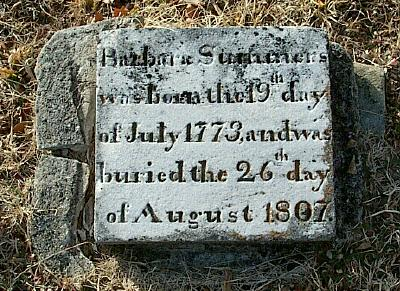

|
|
| 
Barbara COBLE (1773-1807) |
Barbara COBLE
-- U.S., Sons of the American Revolution Membership Applications (1889-1970) -- great, great-grandson William Thornton Whitsett's application Barbara married Captain Peter SUMMERS, son of Jacob SUMMERS and Anna Margaret FAUST, in 1784 in Guilford County, North Carolina. (Captain Peter SUMMERS was born on 16 May 1757 in Whitsett, Guilford County, North Carolina, died on 17 Aug 1837 in Gibsonville, Guilford County, North Carolina and was buried in Friedens Lutheran Church Cemetery, Gibsonville, Guilford County, NC.) |
 Research Notes:
Research Notes: